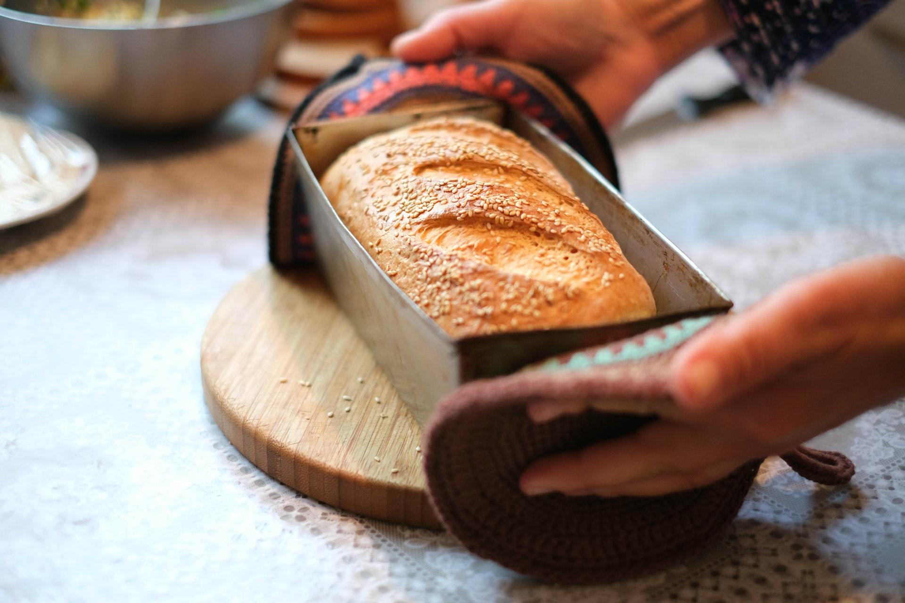

Pão caseiro

- 400ml de água.
- 3 colheres de sopa de açucar.
- 1 colher (chá) de sal.
- 50ml de óleo.
- 10g de fermento seco.
- 1kl de farinha de trigo aproximadamente
Modo de preparo
-
Deixar a água morna.
-
Passar a água para uma tijela.
-
Acrecenta 3 colheres (sopa de açucar).
-
1 colher (chá) de sal.
-
50ml de óleo
-
10g de fermento seco.
-
Misturar com uma colher de pal, com todos ingredientes.
-
Despejar a farinha de trigo pouco a pouco, e continuar misturando.
-
Quando não for possivel mexer mais, passe para uma superfíce 'mesa' ou 'pia'.
-
Sovar a massa, e despejando a farinha de trigo pouco a pouco, até dar o ponto de soltar das mãos.
-
Tranfira para sua tijela, e cubra com um pano, deixe descansar por 1 hora.
obs: de preferência dentro do forno desligado.
-
Após 1 hora passe pra uma mesa, com um pouco de farinha aplicada na superfice, abra a massa com um
rolo de macarrão
-
Modele a massa na sua preferência, e novamente deixe descansar a massa, por 15min.
-
Assar no forno, temperatura 250gº aproximadamente por 30min.
obs: Manter atenção no forno o tempo pode
variar de fogão para fogão.
Clebridade com quem dividiria esse prato.